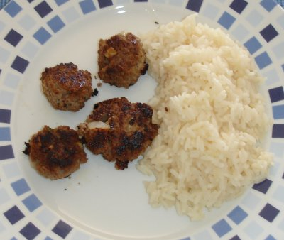

| Zutaten für 2 Personen: | |
| 250 g | gehacktes Rindfleisch |
| 2 El | Quark |
| einige Tropfen | Sesamöl |
| 1 | kleines Stück Pfefferschote |
| 1 | Knoblauchzehe |
| 1 | Zwiebel |
| Sojasauce | |
| 1-2 El | Korianderblättchen (ersatzweise glattblättrige Petersilie) |
| 2-3 dl | kräftige Rindsbouillon |
Hackfleisch mit Quark verkneten und Sesamöl beifügen. Pfefferschote von den Kernen und weissen Häutchen befreien und fein hacken. Zusammen mit durchgepresster Knoblauchzehe und fein geriebener Zwiebel zur Fleischmasse geben und gut kneten.
Mit Sojasauce abschmecken und gehackte Korianderblättchen hinzufügen. Masse rund 1 Stunde im Kühlschrank ziehen lassen. Mit nassen Händen Bällchen formen und auf einen Siebeinsatz in der Pfanne legen. Rindsbouillon aufkochen und Hackfleischbällchen im Dampf 15 Minuten garen.
Tipp: Pikante Hackfleischbällchen passen ausgezeichnet zu Orangen- oder Zitronenreis. Dafür wird Reis mit Gemüsebouillon sowie etwas Saft und abgeriebener Schale von Orange oder Zitrone gekocht. Man gibt zudem einen Esslöffel getrocknete Weinbeeren und am Schluss einige Mandelsplitter bei. Pikante Hackfleischbällchen könne auch als Vorspeise serviert werden.
Eine Zeitung
Sehr einfach und hat gut geschmeckt. RE, 6.2.2000
Im Dezember 2007 gelang mir das nicht so toll wie man am Bild sieht. Habe nicht warten mögen und hatte keinen Siebeinsatz zur Hand. Der Zitronenreis schmeckte aber sehr gut.